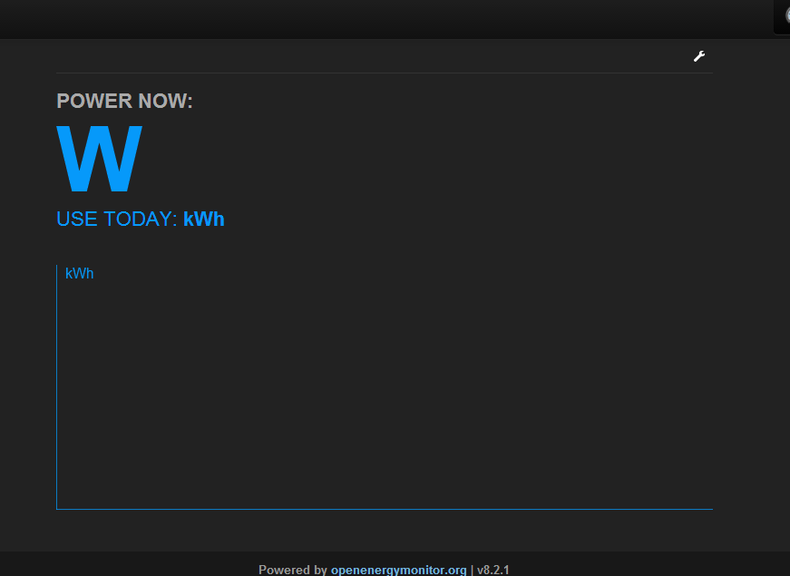

I merged yesterday a series of fairly large changes that where sitting in the Development branch of emoncms into the master branch. The master branch version number is now v8.2.1
This release features:
- Improved feed engine status logging (as in INFO, WARN type logs rather than data logging)
- npoints meta data separation for increased robustness
- improved timezone support
Meta data npoints
The count of the number of datapoints in a phpfina, phpfiwa, phptimestore feed was stored in one meta data file (per feed) along with other meta such as the feed start time and feed interval. In the event of a system crash mid-write to a meta file there is a risk that several of these meta properties can get corrupted. Its only the npoints property that needs to be updated regularly the feeds start time and interval only gets written to once at feed creation. By separating the meta data that gets written at the start and the meta data that gets written to regularly into two different files we reduce the risk of corruption as the npoints count can be recovered independently from the data file size divided by 4 bytes per datapoint. The start time and interval are harder to recover from if you dont have a backup.
As of v8.2.1 there are now two meta files per feed one for the meta data that does not get changed and another for the npoints value.
Improved timezone support
Daily data types now use the PHPTimeSeries engine rather than PHPFina and support a midnight reset time set by the user timezone setting under user account. This is a significant change as there was previously minimal support for different timezones if the system time was different from the user timezone.
Testing and upgrading
I've been running this version on my own system for almost two weeks and I havent had any problems, to upgrade to it is just a matter of pulling in the latest changes and creating a fresh copy of the settings.php file. I would recommend doing a backup of your data before doing an upgrade via approach 2 here: http://emoncms.org/site/docs/backup
A restart to the rfm12piphp script or oem_gateway will probably be required.
I'd appreciate feedback on the work to improve timezone support. To make use of it you will unfortunatly need to create new daily feeds using the PHPTimeSeries feed engine which is now the default engine for this feed type (as it will allow hour changes for summer time) (or if your still using mysql thats also fine). You could initially do a parallel test with new PHPTimeSeries daily feeds to check that they give the correct results. You will also need to select your timezone in the user > account page.
I havent yet upgraded emoncms.org, Il do that early next week.
Thanks a lot,
Trystan
Re: emoncms v 8.2.1
Just updated to v8.2.1 and My Electric page has stopped working. I've made a new settings.php, cleared the browser cache and rebooted emoncms.
Please see screenshot below, there is no data, and the wrench does not open the config settings.
Developer tools show the error;
Uncaught TypeError: Cannot read property '1' of undefined myelectric?apikey=503hq2wgeqhj21e4qeqc241b5740b5e:283
Paul

Re: emoncms v 8.2.1
Hello Paul, thanks for testing. Can you check if the data is visible via the normal feeds vis? and do you know which line that error relates too?
Re: emoncms v 8.2.1
For additional debugging it might also be useful to use the new logging tool (thanks to Dave McCraw):
sudo pear channel-discover pear.apache.org/log4php
sudo pear install log4php/Apache_log4php
You may want to change line 102 in settings.php to the location of your emoncms installation if its not via the apt method
ie from:
$log4php_configPath = '/etc/emoncms/emoncms_log4j.xml';
to
$log4php_configPath = '/var/www/emoncms/logconfig.xml';
Create a blank file for the logger to use in the location given in logconfig.xml which by default is the same directory as the emoncms installation and then ensure that log file has write permissions for www-data, pi and root.
sudo chmod 660 emoncms.log
Re: emoncms v 8.2.1
I only have 2 PHPFINA feeds (both power to kwh/d), one of which feeds Myelectric. Both of these feeds are now frozen with no feeds vis, and showing SIZE: 0.0kb. - (They were OK before the update).
Everything else seems OK, all other charts display OK.
There is no line number or other info in the console.
Paul
Re: emoncms v 8.2.1
As for the log... I get the following error logged, repeated 94 times.
WARN - 2014-5-18 09:49:30, PHPFina:get_meta meta file npoints () does not match filesize npoints (9) id=125
WARN - 2014-5-18 09:49:30, PHPFina:post failed to fetch meta id=125
WARN - 2014-5-18 09:49:31, PHPFina:get_meta meta file npoints () does not match filesize npoints (44) id=122
WARN - 2014-5-18 09:49:31, PHPFina:post failed to fetch meta id=122
WARN - 2014-5-18 09:49:38, PHPFina:get_meta meta file npoints () does not match filesize npoints (9) id=125
WARN - 2014-5-18 09:49:38, PHPFina:post failed to fetch meta id=125
WARN - 2014-5-18 09:49:38, PHPFina:get_meta meta file npoints () does not match filesize npoints (44) id=122
WARN - 2014-5-18 09:49:38, PHPFina:post failed to fetch meta id=122
WARN - 2014-5-18 09:49:38, PHPFina:get_meta meta file npoints () does not match filesize npoints (9) id=125
WARN - 2014-5-18 09:49:38, PHPFina:post failed to fetch meta id=125
Paul
Re: emoncms v 8.2.1
Could you try pulling the latest changes, I spotted one error that might be it.
Re: emoncms v 8.2.1
Yes, that's sorted it.
Everything appears ok now.
Thanks
Paul
Re: emoncms v 8.2.1
Brilliant!
Re: emoncms v 8.2.1
Version with fix has now been tagged 8.2.3 https://github.com/emoncms/emoncms/releases/tag/8.2.3
Re: emoncms v 8.2.1
Hmmm,
since updating to V8.2.4 i regularly get feed data that is 'shifted' in time. From 4 feeds shown in a multigraph one starts to be shifted by some hours or days into the future, then another one and at some time all four feeds 'begin' at the current time (?).
I lost all my data due to this some days ago when updating (feeds were overwritten with new data from the start) and recreated all feeds on the weekend. Now I have the same thing again.
Why is the feed meta file touched at all? I thought that with the new changes the meta file is only written once when creating the feed?
BR, Jörg.
Re: emoncms v 8.2.1
Hello Jorg, O dear that doesn't sound good. There must be something going wrong at this point:
https://github.com/emoncms/emoncms/blob/master/Modules/feed/engine/PHPFi...
Looking at it again its not very robust, in the event that the npoints meta file gets set to 0 it will set the starttime to now. I will extend it with a check that will only create the meta file if the start time is also 0 which should only be the case when the feed is first created.
if ($meta->npoints[0] == 0 && $meta->start_time==0) { }
Re: emoncms v 8.2.1
There we are commit done:
https://github.com/emoncms/emoncms/commit/715f47bf90c61066f5484df3a8d192...
version is 8.2.5
https://github.com/emoncms/emoncms/releases/tag/8.2.5
Before upgrading I would suggest everyone do a backup of their phpfiwa, phpfina and phptimestore data directories following approach 2 here: http://emoncms.org/site/docs/backup.
Make sure you disable oem_gateway/emonhub or raspberrypi_run and any posting to the http api's (stop apache) before copying the data files so that when you make the copy the data is in a state where its not being written to. (I've added this as a note to the backup procedure)
Re: emoncms v 8.2.1
Hi Trystan,
good you found something. I will try that immediately.
BR, Jörg.
PS: it was my own fault not to backup the data files before updating emoncms. Everything on my server is automatically backed up every day ........... with the exception of the 'emoncmsdata' directory. Don't ask why! (I think I thought that the size of the data files would be too big! Must have been very late again that day .....)
Re: emoncms v 8.2.1
Hi
Running import_full.php script I get the following errors:-
PHP Notice: Use of undefined constant _ENABLE_PASSWORD_RESET_ - assumed '_ENABL E_PASSWORD_RESET_' in /var/www/emoncms/settings.php on line 56
PHP Notice: Undefined variable: timestore_adminkey in /var/www/emoncms/scripts/ usefulscripts/replication/import_full.php on line 15
Notice: Undefined variable: timestore_adminkey in /var/www/emoncms/scripts/usefu lscripts/replication/import_full.php on line 15
PHP Fatal error: Class 'EmonLogger' not found in /var/www/emoncms/Modules/feed/ feed_model.php on line 30
Fatal error: Class 'EmonLogger' not found in /var/www/emoncms/Modules/feed/feed_ model.php on line 30
I am not using timestore on the server I am backing up as I changed all feeds to the PHP versions.
Regards
Ian
Re: emoncms v 8.2.1
Hello Ian, I think I need to upgrade the backup scripts I will take a look later today.